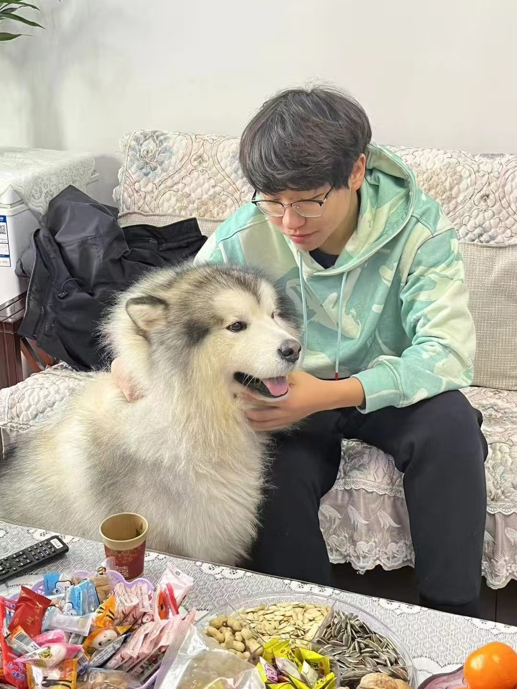
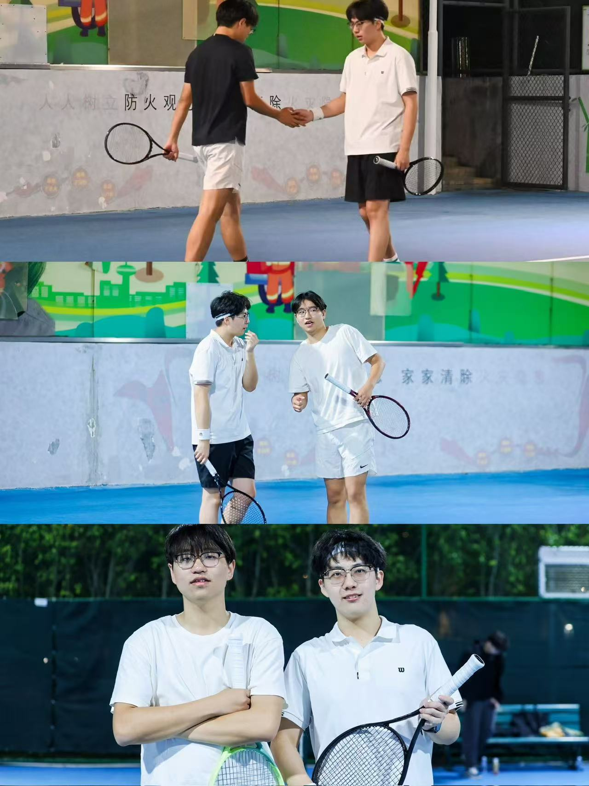
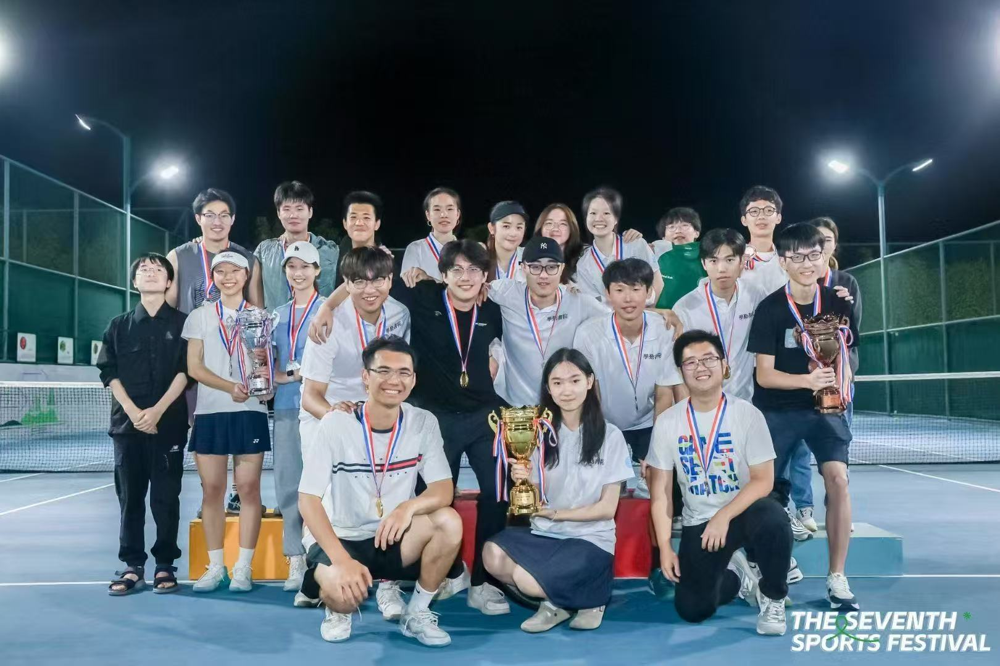
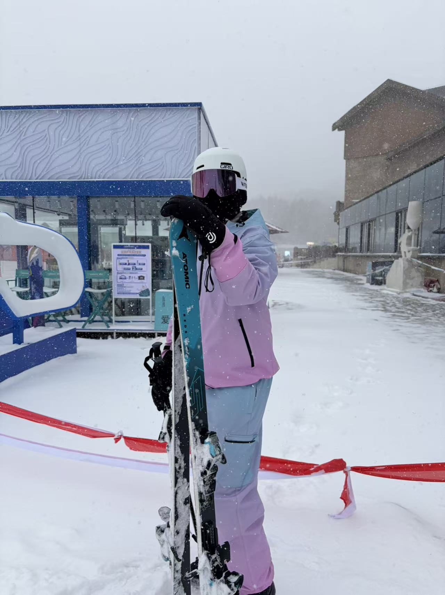
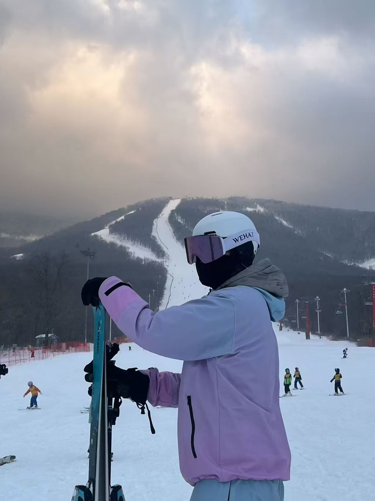

About
I studied electronic information engineering at The Chinese University of Hong Kong, Shenzhen, specializing in computer engineering. As a research assistant there, I worked on controlling and optimizing the behavior of AI agents in financial market simulations.
My close collaborators include Professors Jiale Han and Honghai Yu and Dr. Shuqi Guo.
Research
My research focuses on the generalization and robustness of vision-language-action (VLA) models in embodied AI. I also have a strong interest in 3D reconstruction, particularly in recovering scene geometry from multiple views.
News
Our paper Bridging Semantics and Utilities: A Controllable and Scalable Market Simulation is now available as an arXiv preprint. I worked on this project with Professors Jiale Han and Honghai Yu and the rest of our team.
Publications
Hobbies
Tennis and electronic music keep me energized outside of research. I also love skiing. If you ever want to play a set, spend a day at a ski resort, or catch a DJ set together, I’d love to hear from you.



